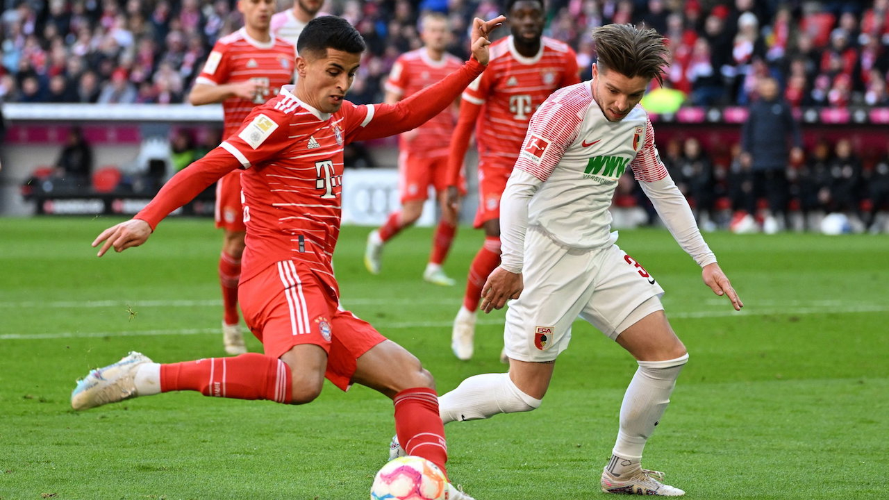
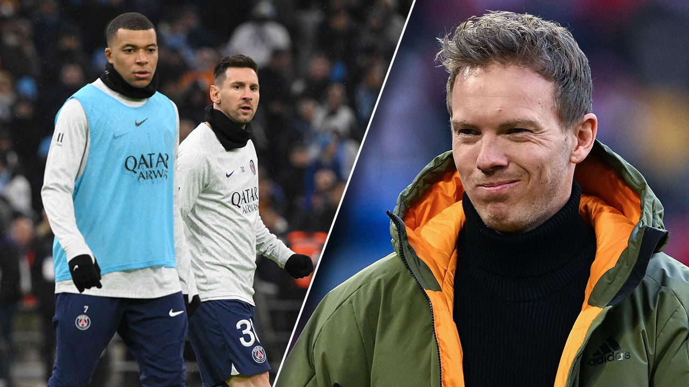
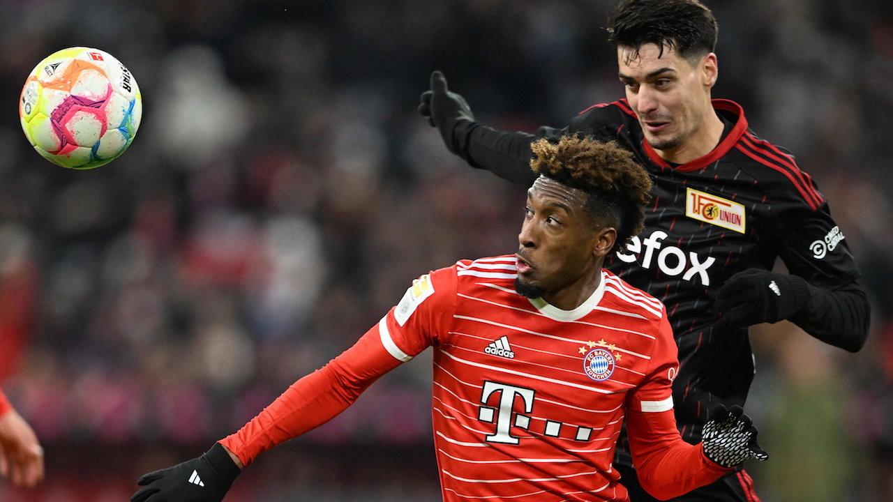

FC BAYERN MÜNCHEN NEWS
11 มี.ค.
"เสือใต้" บาเยิร์น มิวนิก เปิดบ้านเอาชนะ เอาก์สบวร์ก ไปแบบสุดมัน นำจ่าฝูง
บุนเดสลีกา เยอรมนี ต่อไป

บุนเดสลีกา เยอรมนี ต่อไป
9 มี.ค.
ชัดนะ “มุลเลอร์” ให้คำตอบ หลังถูกถาม “โรนัลโด-เมสซี” ใครดวลด้วยยากกว่ากัน

8 มี.ค
"ฝันไปเถอะ! กุนซือบาเยิร์น เผย 3 วิธีปิดตาย เมสซี-เอ็มบัปเป ดับโอกาสลุ้นเข้ารอบ 8 ทีม ยูฟ่า แชมเปียนส์ลีก

5 มี.ค.
"บาเยิร์น มิวนิก" ไม่พลาด บุกเชือด "สตุตการ์ท" คาบ้าน ทวงคืนจ่าฝูงบุนเดสลีกา

2 มี.ค.
ผมอยู่มาก่อน "มาเน" เปิดปากอย่างมั่นใจ "คลอปป์" พา "ลิเวอร์พูล" กลับมายิ่งใหญ่ได้แน่

27 ก.พ.
"บาเยิร์น มิวนิก" ฟอร์มดุ ถล่ม "อูนิโอน เบอร์ลิน" กระจุย ขึ้นจ่าฝูงบุนเดสลีกา
